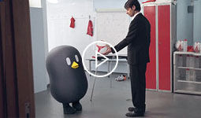
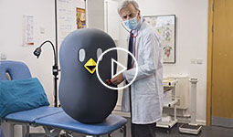
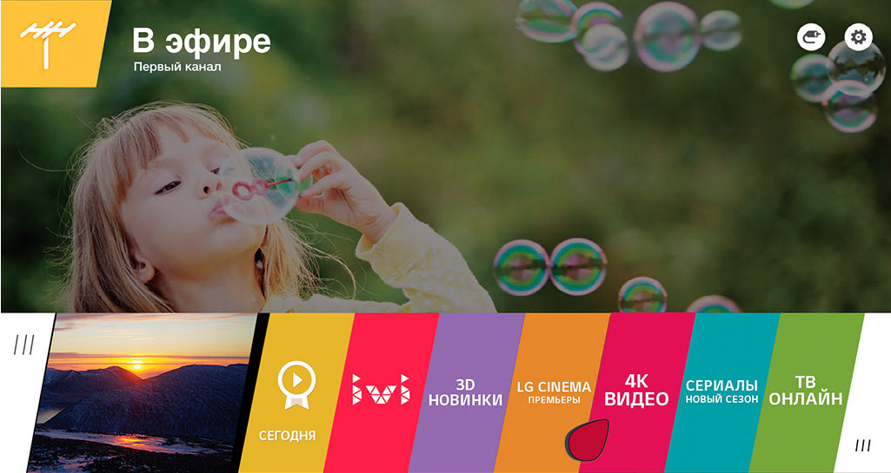
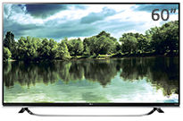
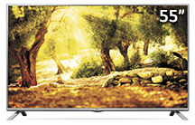
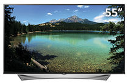

Просмотр 4К видео через интернет
Интуитивный интерфейс webOS
Доступ к обширной библиотеке фильмов в самых популярных видео-сервисах
Особенности и управление новым webOS

BEAN BIRD — Футбольная тактика

BEAN BIRD — Диагноз
BEAN BIRD is Coming!
Легкая настройка
Быстро, просто, весело
WebOS содержит сотни приложений, тысячи фильмов и дает доступ к другому контенту. Дружелюбный интерфейс webOS будет понятен даже новичкам без опыта использования Smart TV. Многозадачный режим позволяет работать одновременно с несколькими приложениями, раскрывая и сворачивая их по мере надобности.
А чтобы не потеряться в общем изобилии, к вашим услугам есть специальный сервис, подбирающий рекомендованный контент из интернета и локальных ресурсов.
Помощник подключений
включи и используй
В дружелюбном интерфейсе webOS все необходимое доступно за пару кликов. К примеру, чтобы подключить к телевизору новое устройство, необязательно изучать недра меню и список портов. Как только вы подключите кабель, на экране появится окошко предпросмотра, и можно будет одним нажатием переключиться на обнаруженный сигнал.
LG Store
все лучшее в одном сервисе
Главное богатство умного телевизора – обилие контента на любой вкус. В LG Store вы найдете видео по запросу, 3D-видео, музыкальные сервисы, игры и многое другое. Вас ждут сотни приложений и тысячи фильмов, а чтобы не заблудиться в этом многообразии, в LG webOS предусмотрена система рекомендаций. Телевизор предложит вам, что посмотреть, исходя из ваших персональных вкусов.

Запустить демо-режим webOS
3D коллекция фильмов
В приложени "3D World" на телевизорах LG, оснащенных системой webOS, собрана уникальная коллекция полнометражных 3D-фильмов. Любимые фильмы от Disney и других голливудских студий обеспечат первоклассное семейное развлечение, а удобных очков CINEMA 3D из комплекта телевизора хватит на всех.
Обмен данными
LG webOS – это не только продвинутая система Smart TV, но и максимально удобная интеграция с другими устройствами.
Вы можете просматривать файлы с внешних устройств на экране телевизора через LG webOS Share, а также транслировать изображение по воздуху через Miracast, либо подключить мобильное устройство через MHL. Вы не встретите лишних ограничений на своем пути, когда захотите поделиться лучшими моментам из жизни на большом экране!
Смотрите 4K-видео через интернет
Популярные видеосервисы Okko и ivi.ru запустили на телевизорах LG стриминг 4K-фильмов через интернет. Это стало возможным благодаря мощной аппаратной начинке LG и поддержке новейшего кодека HEVC. Ваш телевизор уже готов к переходу онлайн-кинотеатров на требовательный формат ULTRA HD 4K.
Пульт Magic Remote
Пульт Magic Remote – невероятно простой и удобный способ управления всеми возможностями webOS. По своей интуитивности он может поспорить с компьютерной мышкой. Встроенный микрофон для голосовых команд и дополнительные кнопки с цифрами позволяют с легкостью заменить кнопочный пульт.
Универсальный пульт
Можно использовать ваш пульт от телевизора еще и для других устройств, например внешней аудиoсистемы, BluRay-проигрывателя или даже спутникового ресивера. Один пульт для всех устройств —максимальное удобство.
Голосовое управление
В Magic Remote встроен микрофон. Вы можете давать телевизору голосовые команды
или же вместо утомительного набора текста просто надиктовать его.
Для моделей со встроенным микрофоном можете давать команды телевизору
прямо с дивана.
Меню
Нажмите эту кнопку, чтобы увидеть ваши приложения и сервисы Smart TV.
Колесико
Для максимального удобства в пульт добавлено колесико для прокрутки между экранами в интернет-браузере или в приложениях.
Наведи-и-Кликни
Использовать Magic Remote так же просто, как и обычную компьютерную мышку. Наведите
курсор и кликните.
Рекомендованные
модели
Ультрачёткость в каждой детали
UF850V

Ультрачёткость в каждой детали
UF850V

Это не просто телевизор, это Smart TV
LF640V

Ультрачёткость в каждой детали
UF950V